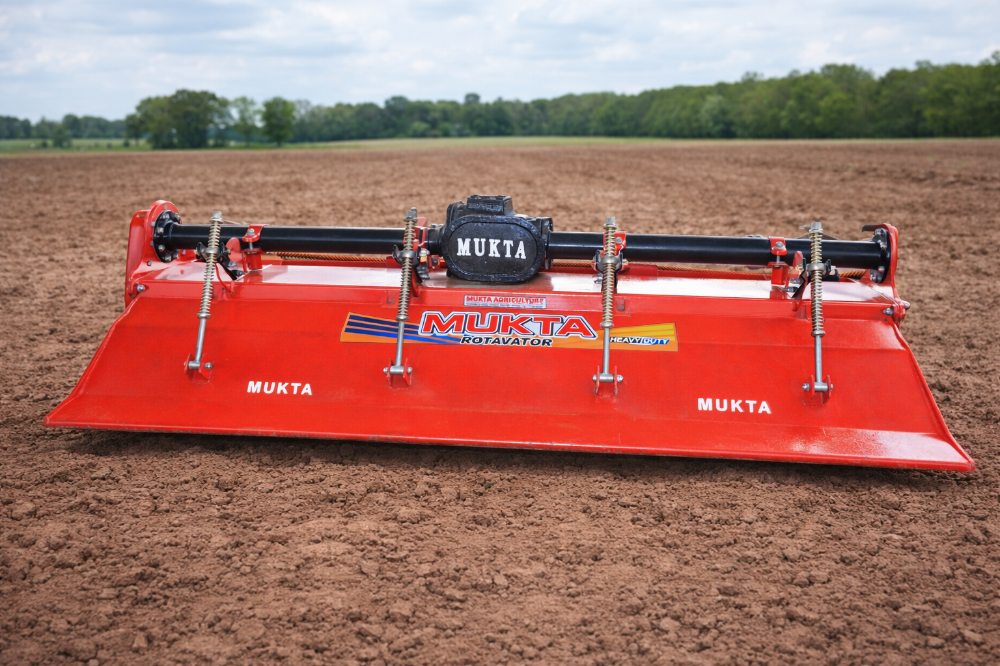
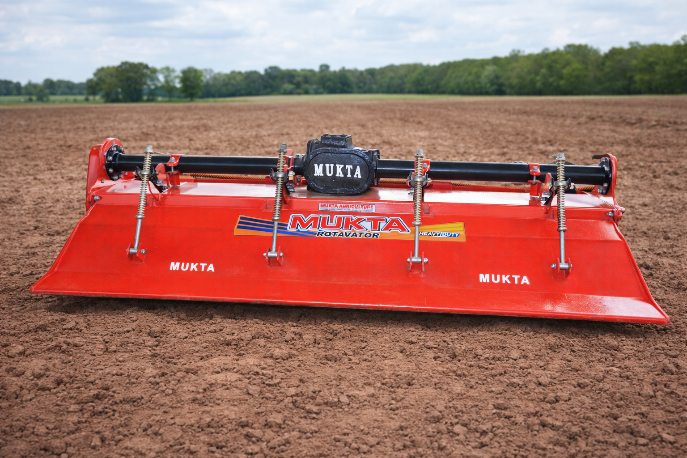

Trusted by
5000+ Farmers
Your trusted partner in modern farming. Discover rotavators, cultivators, and essential agricultural tools.
Explore our wide range of agricultural equipment designed to enhance productivity and efficiency on your farm.

Professional grade rotavator for soil preparation, suitable for all soil types.

High-efficiency cultivator for uniform soil preparation and field reliability

Mukta Agriculture is committed to empowering farmers with reliable, high-quality agricultural equipment that improves productivity and supports sustainable farming practices.
All products undergo rigorous quality checks
Professional guidance from farming experts
Comprehensive maintenance and repair support
Competitive pricing with flexible options
With years of hands-on experience in the agricultural machinery industry, Mukta Agriculture designs and manufactures farm equipment in our own workshop. We build rotavators, cultivators, seeders, and tractor attachments with a strong focus on durability, performance, and long-term reliability.
Every product is developed and assembled by our skilled team, keeping real field conditions in mind. By working closely with farmers, we ensure that our equipment delivers consistent results and stands up to the demands of daily agricultural use, season after season.

 

The Heavy Duty Rotavator is designed for efficient soil preparation, breaking hard soil clods and creating a fine seedbed in a single pass. Built for durability and consistent field performance across all soil conditions.
Manufactured by: Mukta Agriculture, Sirsa, Haryana
Contact on WhatsApp